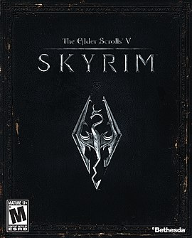
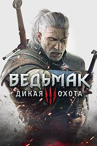
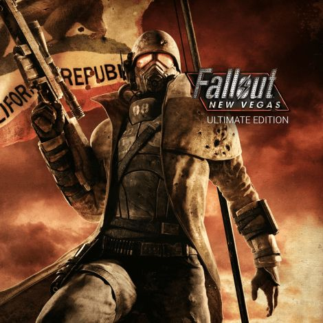

Комп'ютерні ігри
1.The Elder Scrolls V: Skyrim
 The Elder Scrolls V: Skyrim (з англ. Стародавні Сувої V: Скайрім; також The Elder Scrolls V або Skyrim; скорочено TESV: Skyrim або TESV) — рольова відеогра, розроблена Bethesda Game Studios і опублікована Bethesda Softworks. Це п'ята гра в серії The Elder Scrolls, попередньою була The Elder Scrolls IV: Oblivion. Гра вийшла 11 листопада 2011 для Microsoft Windows, PlayStation 3 та Xbox 360. Влітку 2016 було анонсоване перевидання The Elder Scrolls V: Skyrim – Special Edition зі значно покращенною графікою. Реліз перевидання відбудеться 28 жовтня 2016 для платформ PC, PlayStation 4 та Xbox One. Власники повної ліцензійної гри на PC отримають перевидання безкоштовно.
Головна лінія сюжету Skyrim присвячена намаганням головного героя перемогти Алдуїна, старшого сина головного бога Тамріеля Акатоша. За пророцтвом Алдуїн знищить світ. Події гри відбуваються в провінції Скайрим через 200 років після подій Oblivion. У той час у Скайримі починається громадянська війна, що розпочалася з убивства Верховного короля. Skyrim має відкритий кінець, як це властиво всій серії. Гравець може при бажанні досліджувати світ, замість виконання завдань основного квесту.
Основним елементом гри є розвиток героя. На початку гравець обирає для свого героя одну з людських, ельфійських або зооморфічних рас, у кожної з яких є свої природні задатки. Крім того гравець має змогу дещо змінити те, як виглядатиме його герой. Далі перед гравцем стоїть завдання покращувати «вміння» свого героя. Ці «вміння» задаються числовими характеристиками, й відповідають можливостям героя у відповідних областях діяльності. Усі «вміння» поділені на катерогії, що відподають бою, магії та непомітності.
| Найвідоміші саундтреки | Аудіо файл |
|---|---|
| "The Song of the Dragonborn" |
2.The Witcher 3: Wild Hunt
 Рольова відеогра, розроблена польською компанією CD Projekt RED за мотивами серії романів «Відьмак» письменника Анджея Сапковського, продовження відеоігор «Відьмак» і «Відьмак 2: Вбивці королів». Завершальна частина трилогії. Вихід гри був запланований на 2014 рік, але потім було прийнято рішення про перенесення випуску на лютий 2015 року. Зрештою, остаточною датою було обрано 19 травня. За словами розробників, на консолях сьомого покоління Xbox 360 і PlayStation 3 гра виходити не буде. Станом на квітень-травень 2015 року The Witcher 3: Wild Hunt стала найшвидше продаваною відеогрою Великої Британії. Станом на 2017 рік продано понад 20 мільйонів копій. Гра набагато частіше звертається до літературного першоджерела, ніж попередні частини.
Ігровий процес Третя частина серії поєднує в собі нелінійний сюжет і відкритий ігровий світ, який у тридцять разів більший, ніж світ Відьмака 2. Для пересування можна використати різний транспорт, наприклад, кобилу Плітку або човен. Проходження основної сюжетної лінії займає близько 50 годин гри. Побічні квести займають приблизно стільки ж. За цей час герой може розвинутись до максимального 35-го рівня.
| Найвідоміші саундтреки | Аудіо файли |
|---|---|
| "The Witcher 3 Wild Hunt Theme" |
3.Fallout: New Vegas
 (укр. Радіоактивні опади: Новий Вегас) — відеогра жанру Action RPG з відкритим світом, розроблена студією Obsidian Entertainment та видана компанією Bethesda Softworks. Вийшла на Microsoft Windows, PlayStation 3 та Xbox 360 у жовтні 2010 року. Події відбуваються на постапокаліптичному просторі навколо Лас-Вегаса, штат Невада, США.
Fallout: New Vegas Хоч гра і базується на тому ж рушії, що і попередня гра серії, New Vegas не є прямим продовженням Fallout 3, однак гра використовує ту ж саму рольову систему. У гру повернулись багато елементів з попередніх ігор серії, бо багато співробітників Obsidian Entertainment раніше працювали у студії Black Isle Studios, яка розробляла Fallout та Fallout 2.
Грі на даний час належить рекорд по кількості діалогів серед рольових ігор. New Vegas містить близько 65 000 рядків діалогів, таким чином перемігши за кількістю свого попередника і попереднього рекордсмена Fallout 3 в якому міститься 40 000.
Гравець грає людиною, відомою просто як "Кур'єр", що працює у «Мохаве Експрес». Одного разу Кур'єру пропонують доставити загадкову "платинову фішку" у Нью-Вегас, але дорогою він втрапляє у засідку Бенні (озвучений Меттью Перрі), керівника одного з казино в Нью-Вегасі, який краде фішку, стріляє в голову Кур'єру і йде, заливши гравця в неглибокій могилі.
| Найвідоміші саундтреки | Аудіо файли |
|---|---|
| "Marty Robbins - Big Iron" |
Композиції із сайту
- {{x}}×
{{errortext}}